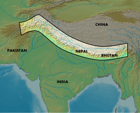

Eastern Himalayas
This enchanted Shangri-La stretches across Nepal, Bhutan, northeast India, southeast Tibet and northern Myanmar. The region is home to iconic species such as the snow leopard, Bengal tiger and one-horned rhino, as well as millions of people.
WWF Projects
Bhutan: Committed to Conservation
- Bhutan is at the heart of the Eastern Himalayas, which supplies one-third of the world’s freshwater. And the country’s forests help keep climate change at bay by absorbing carbon dioxide. Bhutan is one of the world’s 10 most biodiverse countries. But Bhutan’s natural resources are on the brink of being more threatened now than ever before, despite the government’s political will and conservation milestones. Why? The country has changed more in the last 50 years than the past 500 years combined.
Third Pole GeoLab
- WWF developed and launched Third Pole GeoLab, an interactive web-based tool and database for snow leopard conservation, climate change, and water security issues in Asia’s high mountains, as part of our USAID-funded project, Conservation and Adaptation in Asia’s High Mountain Communities and Landscapes.
Conserving Snow Leopards, Securing Water Resources, and Benefiting Communities
- In October 2012, WWF began a four-year project to conserve snow leopard habitat, promote water security, and help communities prepare for climate change impacts in Central Asia. The USAID-funded, $7.3 million Conservation and Adaptation in Asia’s High Mountain Landscapes and Communities project will conduct field activities in and build alliances among six of the snow leopard’s 12 range countries: Bhutan, India, Nepal, Mongolia, Kyrgyzstan, and Pakistan. The project will run through September 30, 2016.
|
 |